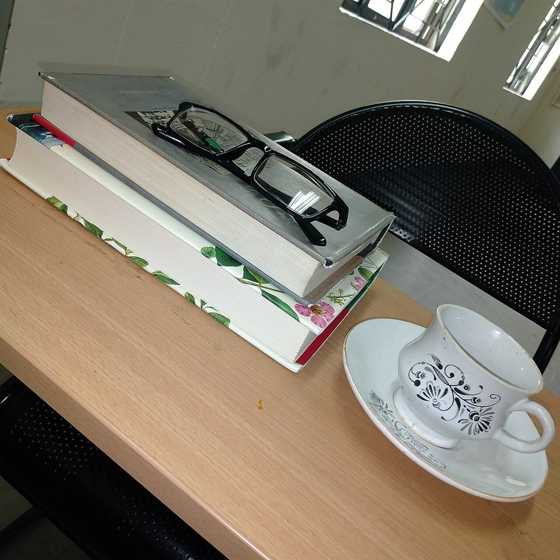
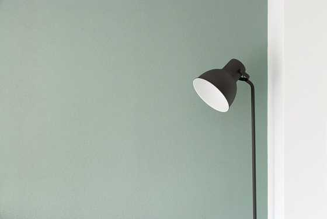
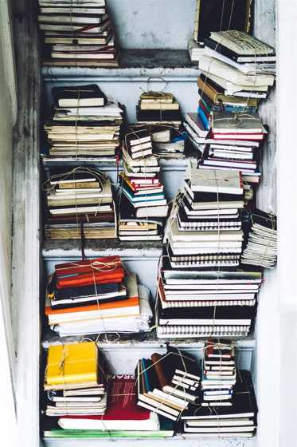

MENUメニュー・過ごし方
軽食とドリンクをご用意しているとのことです。詳しい内容・価格は準備中です。







| ドリンク・軽食 | 準備中 |
|---|---|
| 価格 | 準備中 |
| 営業時間・定休日 | 準備中(最新情報はInstagramをご確認ください) |
| 電話 | 準備中 |
ひとりの時間に、本と、自分と向き合う。
2024年2月、田原市六連町に開業した、全席が一人用のブックカフェです。

「忙しない毎日の中で、一人で過ごすゆっくりとした時間を通じて、自分自身と向き合う」
お店のコンセプト(店主の発信より)
軽食とドリンクをご用意しているとのことです。詳しい内容・価格は準備中です。


| ドリンク・軽食 | 準備中 |
|---|---|
| 価格 | 準備中 |
| 営業時間・定休日 | 準備中(最新情報はInstagramをご確認ください) |
| 電話 | 準備中 |
以下は制作側が作成したイメージで、実在のお客さまの声ではありません。
一人席だけなので、本の世界にゆっくり入っていけました。静かな午後でした。
柔らかな灯りと本に囲まれて、気づけば時間を忘れていました。
飲み物を片手に、頭の中を整理できる場所。また一人で来たいです。
| 住所 | 〒441-3413 愛知県田原市六連町番場19 |
|---|---|
| 電話 | 準備中 |
| @jibun_wo_mitukeru_bookcafe |
写真はフリー素材のイメージで、店舗の実際の様子ではありません。